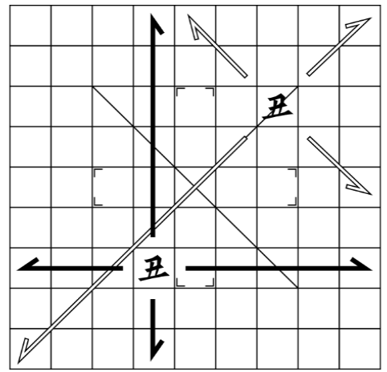

創作伝統ゲームとは
創作伝統ゲームとは総合創作界隈悠里にてFafs氏とSY氏が創作した架空国家「アイル共和国」で伝統的に遊ばれているボードゲームの総称です。この記事はその中でも特にハマっている「机戦」についてのものになります。
※この記事で紹介しているルールは「官定」と呼ばれるルールの中の一種です。地球上では広く遊ばれているルールですが、パイグ将棋は伝統的なゲームなので地域・時代によって異なるルールを採用している場合があります。
机戦(cerke)、通称「パイグ将棋」について
机戦はパイグ民族の古い遊戯である。二人で行い、「駒」(片/zuo1)を動かし、「役」(集/dat2)を作ることを目標とする。初めの競技者が「駒」を進め、その後、他の競技者もこれを進めることを繰り返す。その結果、多くの点を得た競技者が勝利する。なお、「駒」とは動かすための木の小片であり、「役」とは得点するために必要な特定の駒の集まりである。
・・・というのがパイグ将棋の概要なのですが、ぶっちゃけ何言ってるかわからないと思います。要は、将棋みたいに駒を動かし、麻雀みたいに役をつくって相手に勝利しよう！といったゲームになります。
細かいルールについて説明すると僕の拙い文章力では日が暮れても理解できないと思うので、下記のpdfとサイトを参照してください。サイトは「統一規則」のところに詳しく載っています。
ルールpdf 公式サイト駒の動かし方、日本語表記とパイグ語表記は右に記載しておきます。
なぜ読むのさえめんどくさい難しいこのゲームにドハマりしたのか、それは「戦略性」の高さとま未発達ゆえの「拡張性」の高さにあると思っています。パイグ将棋独特のシステムとして「踏み越え」というものがあります。

この「弓」というコマは普段は飛車のような動き、皇処では角のような動きをします。将棋では弓の前に兵がいた場合、兵の向こう側にたとえ王がいたとしてもとることができません。でも、パイグ将棋の場合は踏み越え判定にさえ成功すればとることができるのです！なので、取られたくない場合は2つ駒を置くかそもそも無限移動する駒の動線に重要な駒を置かない、などの対策が必要になります。しかし、サイトの駒の動き方のページを見てもらえればわかるとおり無限移動する駒がとても多いので全ての駒を守ることはできません。なので、相手の狙ってくるであろう役を考え、その役を完成させないように立ち回る必要があるのです！
でも、我々人間(僕は和菓子ですが) はそんなにすべてのことに注意を払うことはできません(パイグ将棋が”不注意ゲー”と呼ばれる原因)。だからこそ「戦法」が必要になってくるわけですが、その戦法もまだまだ考察段階なのです！サイトの戦術研究を見てもらえばわかる通り、まだ戦法の数はたったの5個しかないわけです。つまり今何か考えた戦法は全くの新しいものであり、「自分がこの戦法の考案者だ！」と胸を張って言えるわけです。実際僕も言ってます。みんな激巫と連将使ってね！
そんな今始めれば誰でも世界ランカーになれる伝統ゲーム「パイグ将棋」を！みなさん！やりましょう！